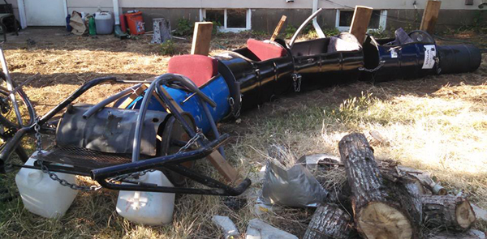
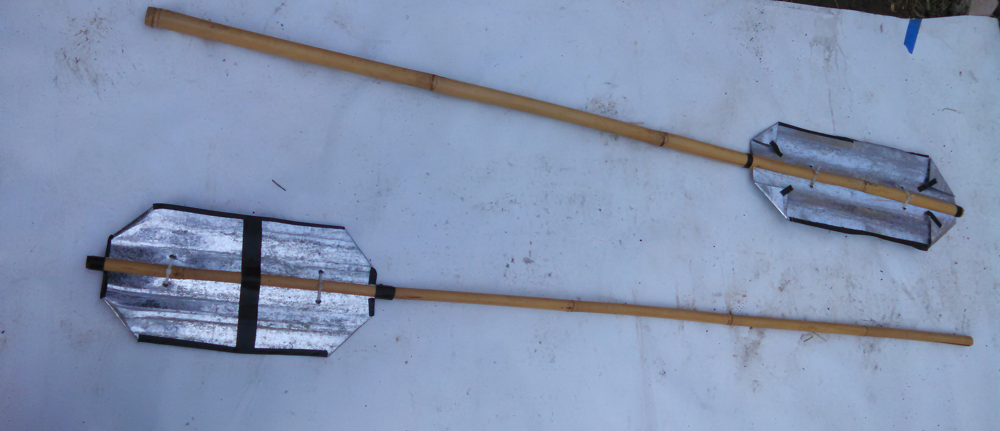
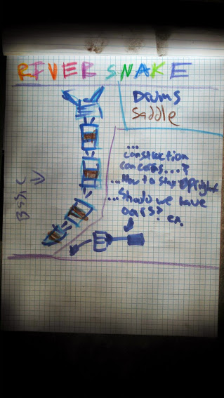
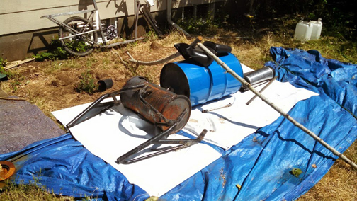

Do Not Do It Yourself
Do Not Do It Yourself

A small boat made for the annual Creature Cruise flotilla, and later it visited the Voyaage of the Hurlothrumbo. Made from a series of 55 gallon barrels. Each unit can be atonomus or strung together. Future designs potentially will have motors, barbecues kegs and wheels.
There was difficulty rowing on the willamette so we made some oars. They are made with left over roof flashing, bamboo and zip ties. Duct tape on edges to prevent cuts.
The night I abandoned the boat on the shores of the murky Willamette I remember the vines and blackberries I used for leverage when climbing. Then walking along the path overloonking river in the darkness. I slept poorly that night, having distrbed dreams of sinking and failure.
The next morning I woke up and went back to the Willamette. Dertmined not to fail, I climbed back into the boat again and rowed and spent the day on the water, making it to my destination, and then going home worn but victorious. Unfortunately I did not get any pictures of this, but later went to the Voyage of the Hurlothrumbo for one day and got a few.
Difficult to see but the sea monster is parked to the right next to the Hurlothrumbo float in the last picture.
This was the final version before the craft was launched to the open river from the Lake Oswego beach by Ultros.
The craft went upriver by paddle for hours, then the head unit started to take water. It to be jettisoned beneath the murky waves. Ultros lay there adrift on the water, being battered by the wakes of passing jetboats, sometimes being thrown into rocky outcroppings. Unable to fight the current, blisters formed on his hands and his muscles were on fire. The tension inside his breast rose, finnally he couldnt take it anymore. In frustration and anguish, he rose his hands to the sky and let out a mighty roar...but nothing happened. After a full day, the sun began to set, twilight fell over the land, and the water became still. Pulling the boat to a nook in the craggy rocks, he half beached his creation, and scaled a cliff the escape in the darkness carrying his safe shame with him, defeated.
The idea for the sea monster came around when a friend suggested I make a float for the second annual creature cruise hosted on the Willamette river in Portland. I took a shower, and came out suggesting I make a barrel boat like a snake. Interest was strong so I sketched a snake, then make a quick prototype/mock up of the first batten and a head and tail. A day or two later.
 